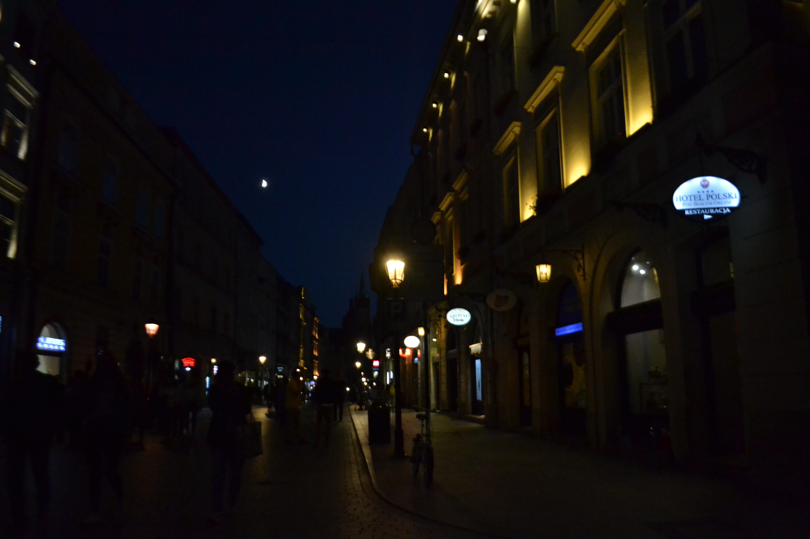

We have also can see Krakow by night !

It was so fantastic !

First, i discovered the beautifull city of Krakow, i could see its big place which is the oldest of Europe, its splendid churches and also its castle of Wavel.
Krakow is my favorite city in the world now.
My first visit to krakow was splendid and wonderful ! Le Stare miasto (Vieille ville en polonais) est le quartier le plus touristique et le plus animée de Cracovie. Elle concentre la majorité des monuments, théâtres, musées d’art, clubs de jazz. La majorité des restaurants, cafés et bars et lieux où sortir. Des ruelles pavées parcourues par des calèches, des maisons aux couleurs chaudes et pastels comme en Italie, des cours et des jardins cachés, des églises. Suivez la balade dans la Vieille ville de Cracovie. Elle est inscrite au patrimoine de l’Unesco. Découvrez l’histoire de la Vieille ville de Cracovie.